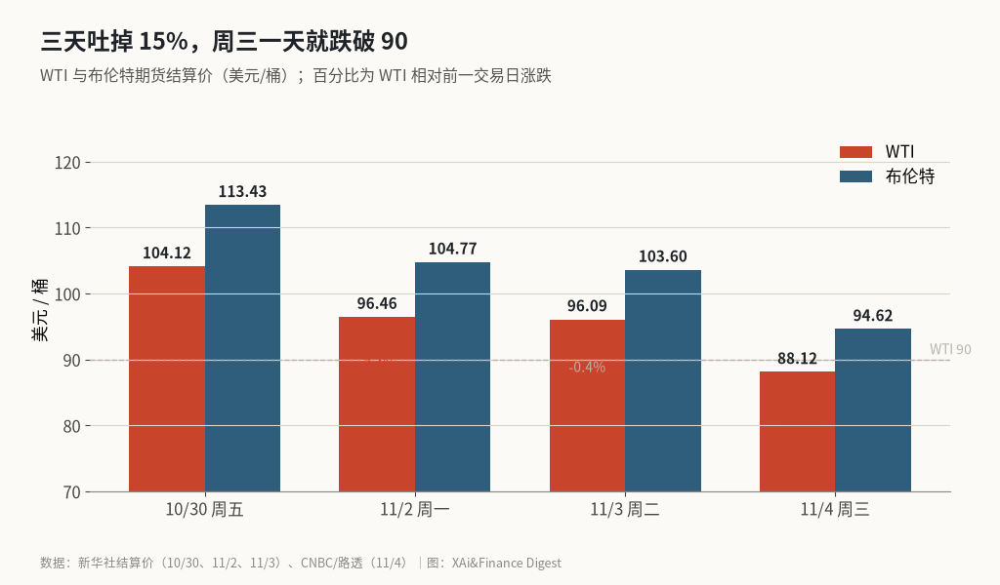
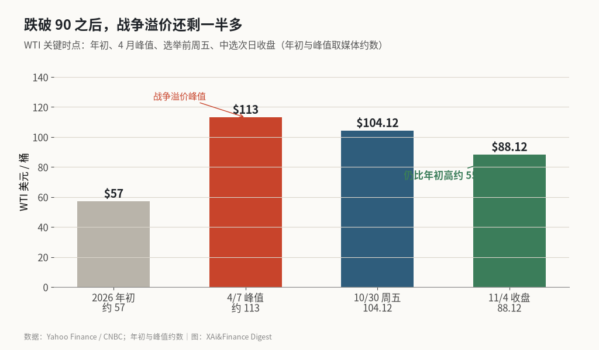

油价一夜跌破 90：吐掉的是中选后升级溢价，不是整场伊朗战争
WTI 结算 −8.3% 至 88.12 美元，布伦特 −8.7% 至 94.62 美元；从周五 104.12 算起三日复合约 −15.4%。万斯把共和党中选失利直接归因伊朗战争，特朗普则说最大包袱是油价飙升。市场在赌民主党控国会会逼出停火，但战争本身还没结束。
这篇要算清楚两笔账。一笔是油价这三天到底跌了多少、跌破的是哪条线；另一笔是这场跌幅吐掉了多少“战争溢价”，以及政治叙事怎么把开战、油价和选票绑在一起。
结论可以先说死。11 月 4 日这一天，WTI 跌破 90 美元、收在 88.12，布伦特收 94.62，单日跌幅都在 8% 以上。把上周五收盘价拿来复合，WTI 三日约 −15.4%，布伦特约 −16.6%。驱动不是库存突然多出来，而是中选结果改写了“选举后会不会再升级”的定价。特朗普和万斯自己把伊朗战争和油价写进了失利原因，交易盘跟着把升级溢价往外吐。说白了，供应还没回来，先回来的是预期。
三日结算价一览：周三一天跌破 90
| 交易日 | WTI 结算 | 日涨跌 | 布伦特结算 | 日涨跌 |
|---|---|---|---|---|
| 10/30 周五 | 104.12 美元 | +2.08% | 113.43 美元 | +约 2.4% |
| 11/2 周一 | 96.46 美元 | −7.36% | 104.77 美元 | −7.63% |
| 11/3 周二 | 96.09 美元 | −0.38% | 103.60 美元 | −1.12% |
| 11/4 周三 | 88.12 美元 | −8.3% | 94.62 美元 | −8.7% |
数字以结算价为准。盘中 X 上 @The_RockTrading 报过布伦特约 94.30（−9%）、WTI 约 88.40（−8%），@Kalshi 写过美油跌破 93；收盘后 CNBC 与路透口径一致，WTI 收 88.12、布伦特收 94.62，两者都是 8 月 31 日以来最低。我不打算在盘中价和结算价的几毛钱上较劲，正文一律用结算。
三日复合要按乘法算：WTI 是 96.46/104.12 × 96.09/96.46 × 88.12/96.09 − 1 ≈ −15.4%；布伦特从周五 113.43 到周三 94.62，约 −16.6%。CNBC 写本周油价期货跌超 14%，和这笔账对得上。Yahoo Finance 还补了一句：这是 WTI 自 2021 年 11 月以来最陡的三日跌幅，也是自 2020 年 4 月以来最差的一周节奏。
收盘价图：周五还在 104，周三已经站到 90 下方

图里看得更直白。周一已经先砸了 7% 以上，那时市场在消化美伊“愿意谈”的信号；周二几乎横盘，把中选结果留到夜里；周三民主党横扫参众两院落地，万斯公开把失利归到战争头上，油价再砸一截，直接跌破 90。
十月油价曾因“中选后可能升级”涨了超过 10%。这笔溢价周三被反过来抽走。Lipow Oil Associates 的 Andy Lipow 对 CNBC 说，选举结果让市场觉得特朗普更有动力谈成一笔交易；民主党控制国会后，也可能收紧战争拨款。交易逻辑很短：升级预期 ↓ → 溢价 ↓ → 价格 ↓。
政治叙事对照：战争、油价，到底谁在咬选票
| 说话人 | 原话大意 | 侧重点 |
|---|---|---|
| 副总统万斯 | “我们输的原因就是这场战争”，总统昨晚自己也这么说 | 战争本身是失利主因 |
| 总统特朗普（华尔街日报） | 伊朗战争是原因之一；不后悔开战；最大政治包袱是油价飙升，不是战争本身 | 承认战争，更强调油价 |
| 市场定价 | 民主党控两院 → 停火/降级概率上升 → 原油大跌 | 赌的是政策路径，不是已停火 |
华尔街日报中文网 @ChineseWSJ 转述的特朗普口径和中新网援引一致：伊朗是因素之一，但他坚称“做的是对的，重来一次还会这么做”，同时把最大包袱指向油价。万斯在 X 上写得更绝，直接说“The reason we lost is the war”，还列出民调里选民要共和党改的四件事：结束战争、盯生活成本与通胀、美国优先、调整对以关系。
两边并不矛盾。开战推高油价，油价推高通胀体感，体感再反噬选票。NBC 援引 GasBuddy，周三全美汽油均价约 4.12 美元/加仑，比 2 月 28 日开战前高约 39%。油价是战争传到选票上的那根管子。@qinbafrank 和 @wufantouzi 把因果说得更冲——没开战通胀就不会反弹、牛市也不会提前结束——这些是观点，不是已核实的宏观复盘，放在这里只说明叙事有多集中。
战争溢价还剩多少：跌破 90，离年初仍远

我拿 Yahoo Finance 和 CNBC 给的几个锚点排了一下。WTI 2026 年初大约 57 美元，4 月 7 日峰值约 113，上周五还在 104，周三收 88.12。相对年初仍高约 55%；相对峰值已经吐掉大约四分之一。⚠️ 年初与峰值是媒体约数，不是交易所逐日序列。
这也是为什么不能把周三的暴跌读成“战争溢价清零”。海湾原油、凝析油和成品油出口 10 月均量约 1710 万桶/日，低于 9 月的 1890 万，但仍大约是战前的四分之三（Vortexa，经路透转述）。EIA 最新一周（截至 10 月 30 日）美国商业原油库存下降 86.5 万桶至 4.098 亿桶，市场原先预期的是增加约 87.7 万桶——库存还在去，不是突然过剩。柴油库存被多家机构说成 2003 年以来最低附近。供应约束还在，跌的是风险溢价。
CIBC 的 Rebecca Babin 觉得这轮抛售“可能有点过火”，市场处在“先开枪再问话”的情绪里。Rapidan Energy 的 Bob McNally 更冷：伊朗立场僵硬，特朗普已经为阻止伊朗拥核付了巨大政治代价，不太可能轻易松手。路透援引伊朗官员的话说，双方距离达成协议仍然很远。价格已经按“更可能谈成”在走，协议本身还没签字。
能源股和汽油期货也在跟着吐溢价
原油带动了一整条链。Yahoo Finance 写 Energy Select Sector SPDR（XLE）当日跌超 5%，炼油股 Marathon Petroleum、Valero 跌约 8%–10%；汽油期货朝着 3 月 10 日以来最低收盘推进。对开车的人，这是未来几周油价可能下到 4 美元以下的预告；对能源股持仓，这是同一笔“停火交易”的另一面。
历史对照也有点意思。Yahoo 算过特朗普几次选举前后的油价：2016 胜选后到 11 月底原油涨约 10%，2020 落败后涨约 20%，2024 胜选后跌约 6%。最接近的是 2018 年中期——民主党拿下众议院——选举日到那个月底原油跌了约 18%。这次民主党连参众两院一起拿下，油价三日已经先跌了 15%。历史不是剧本，但方向一致：分裂政府、战争政治成本上升时，油价容易先被压一截。
溢价能吐多少，取决于停火是不是真的来
归结起来，11 月 4 日油价跌破 90，改写定价的是中选后的升级概率。伊朗战争本身还在继续。WTI 结算 88.12（−8.3%），布伦特 94.62（−8.7%），三日复合大约 −15% 到 −17%，把十月里因“选后升级”堆上去的那截溢价吐了大半。特朗普和万斯的表态等于给市场发了官方确认：战争和油价已经咬到了选票，继续硬刚的政治空间变窄了。
风险在于价格跑在事实前面。协议还没谈成，霍尔木兹附近商船仍在遭袭，海湾出口仍明显低于战前，美国柴油库存偏紧。一旦谈判破裂或出现新的有限打击被读成再升级，88 美元下方未必站得住。反过来，若民主党主导的国会实质限制战争拨款、卡塔尔斡旋拿出可验证的停火步骤，油价还有往下找“无战争溢价”锚的空间——那会更靠近年初 50 多美元的区间，而不是停在 90 附近。
这个判断要改，最硬的两处信号是：一，美伊是否出现可核查的停火或大规模恢复海峡通航；二，WTI 是否在去库背景下重新站回 100 以上，那说明升级溢价又被买回来了。能源政策预期会不会继续压油价，要看国会拨款与白宫外交哪边先动，而不是看单日跌幅本身。
X 上怎么看
结论 · 偏空共识：油价大跌是事实，分歧在战争与中期谁因谁果
▲ 看多1 位
▼ 看空6 位
● 分歧或中性1 位
观点为 X 用户当日公开帖子的中文摘要，忠于原文但有删减；标「未核实」的为预测、个人推测或单一来源说法。立场为人工判断。
数据来源
- WTI / 布伦特 11/4 结算价 88.12（−8.3%）、94.62（−8.7%）以 CNBC 与路透/AsiaOne 为准；10/30、11/2、11/3 结算价以新华社英文稿为准。
- 盘中约数（WTI ~88.40、布伦特 ~94.30、跌破 93）来自 X 帖 @The_RockTrading、@Kalshi，与结算价相差不到 1 美元；正文用结算价。
- 三日复合跌幅按结算价连乘：WTI ≈ −15.4%，布伦特 ≈ −16.6%；CNBC“本周跌超 14%”与之同向。
- 年初约 57 美元、4/7 峰值约 113 美元来自 Yahoo Finance 约数；相对年初约 +55% 为按 88.12/57 推算。
- 特朗普“伊朗是原因之一 / 最大包袱是油价 / 不后悔”来自华尔街日报独家，经中新网与 @ChineseWSJ 转述，口径一致。
- 万斯“The reason we lost is the war”来自其社交帖，CNBC、ABC、Politico 均有引用。
- 海湾出口 1710 万桶/日、EIA 库存 −86.5 万桶至 4.098 亿桶为路透转述 Vortexa / EIA，单一链路。
- 汽油全国均价约 4.12、较战前 +39% 为 NBC 援引 GasBuddy；未与 AAA 周报逐行核对。
- @qinbafrank、@wufantouzi 关于开战与通胀/牛市的因果是观点，未作宏观复算。
- https://www.cnbc.com/2026/11/04/oil-price-iran-war-us-election-strait-hormuz.html
- https://www.cnbc.com/2026/11/03/oil-prices-climb-after-us-reportedly-strikes-irans-qeshm-island.html
- https://finance.yahoo.com/markets/article/oil-prices-fall-below-90-as-traders-bet-on-iran-war-ending-after-democrats-sweep-midterms-192105228.html
- https://www.asiaone.com/money/oil-slumps-after-midterm-election-rebuke-trump-raises-bets-iran-war-exit
- https://english.news.cn/20261031/9156cd5984c741dbabc132ce9ff130de/c.html
- https://english.news.cn/20261103/2976a05ed1b04ff7a948e30e83202611/c.html
- https://english.news.cn/20261104/f3d8ca2f2d684f13a67dc190d2f29e5a/c.html
- https://www.nbcnews.com/business/energy/oil-prices-iran-war-midterms-rcna607448
- http://www.chinanews.com.cn/gj/2026/11-04/10725971.shtml
- https://abcnews.com/Politics/vance-blames-iran-war-republicans-midterms-defeat-trump/story?id=137849295
- https://x.com/spectatorindex/status/2118057067072352593
- https://x.com/The_RockTrading/status/2118028323255406607
- https://x.com/Kalshi/status/2117986473496711497
- https://x.com/ChineseWSJ/status/2117854901401158137
- https://x.com/qinbafrank/status/2117930753522847958
- https://x.com/wufantouzi/status/2117811773218947546